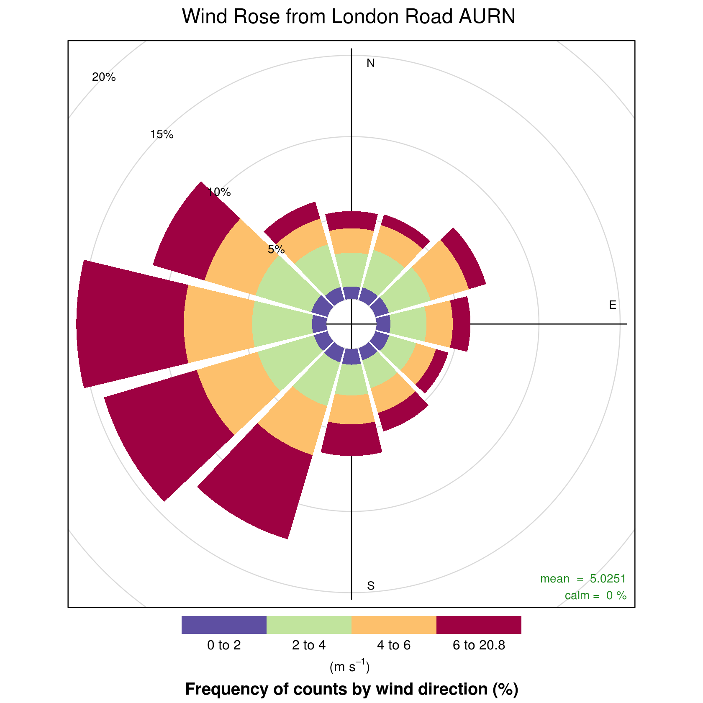
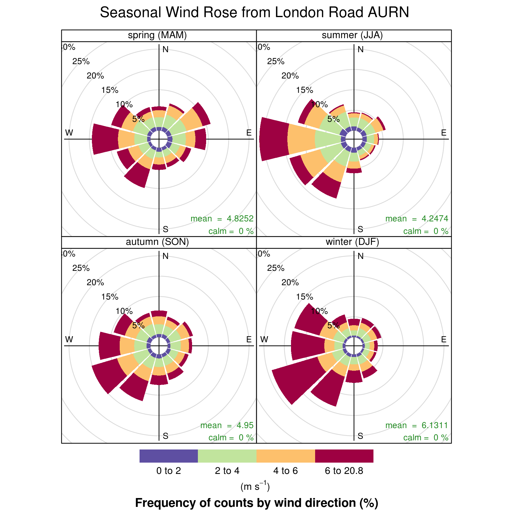
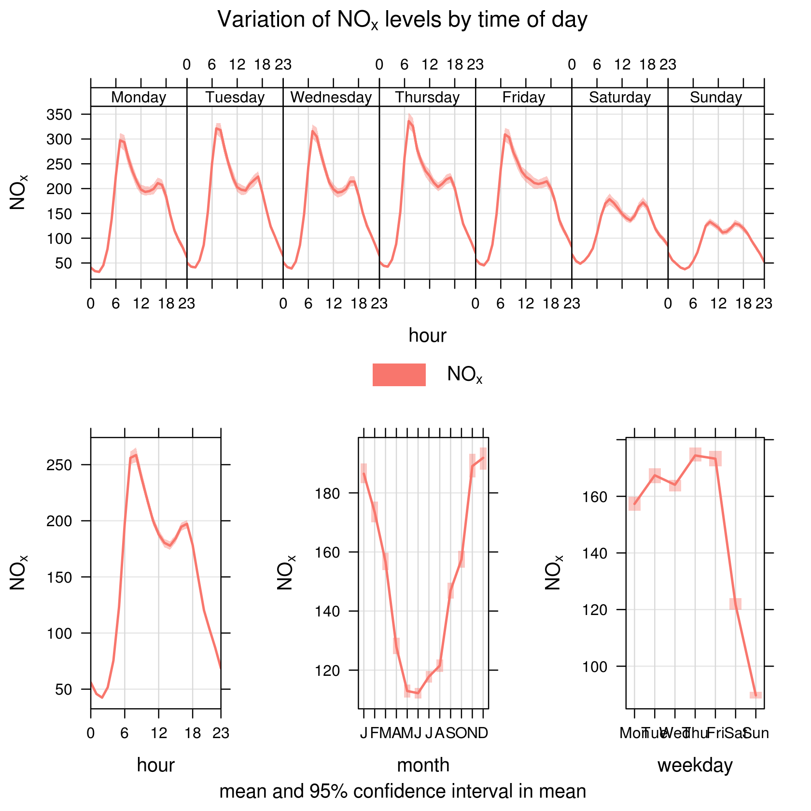
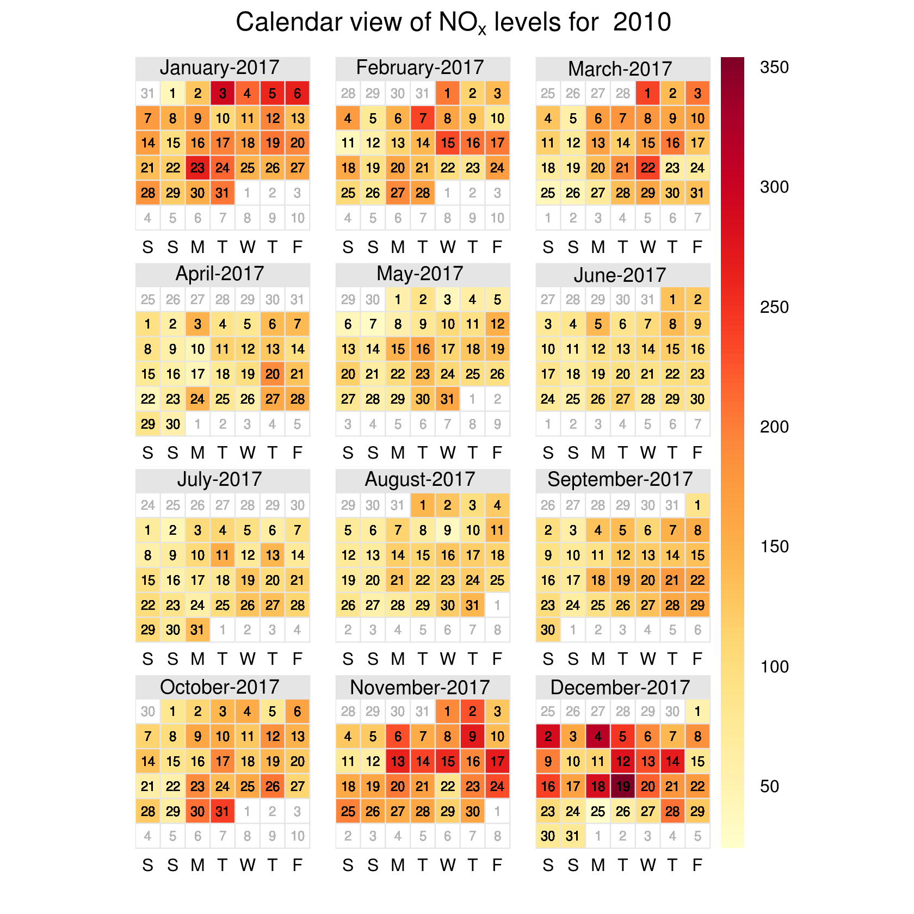
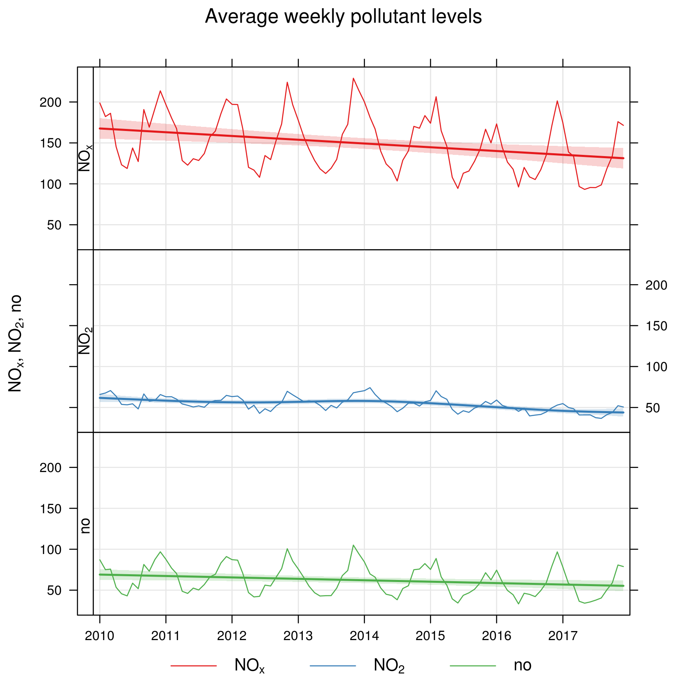
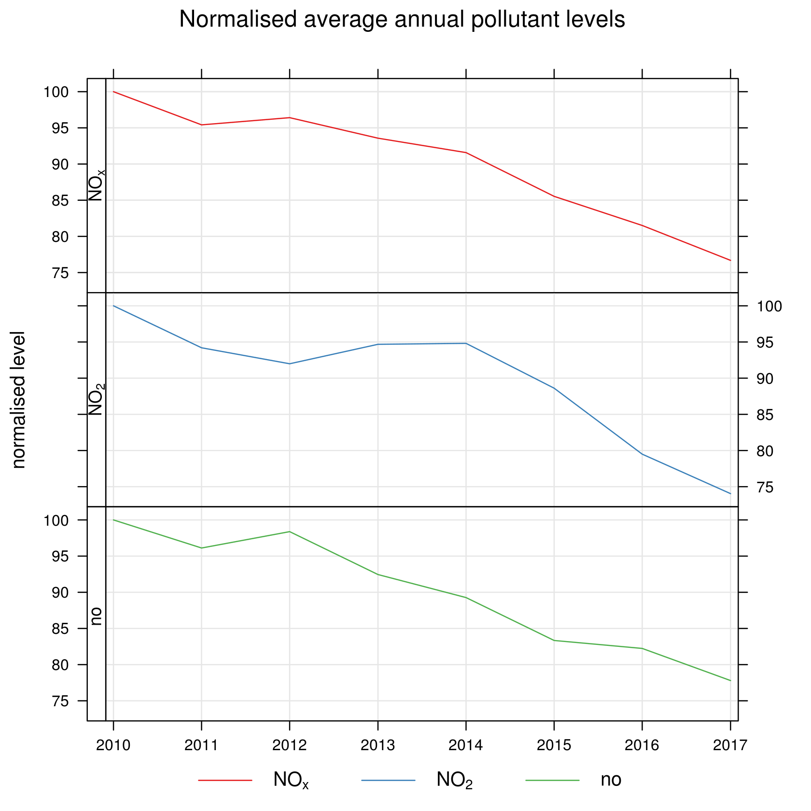
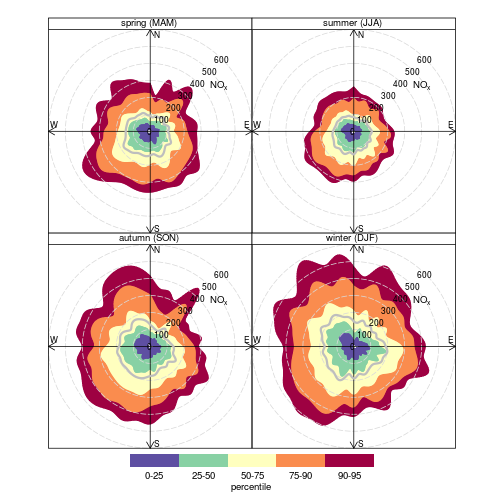

The report shows levels of nitrogen-oxide pollutants for the period 2010-2017. The report used data from the London Road AURN site.
The following diagram, known as a wind rose plots the frequency of wind speed/direction frequencies. Longer slices indicate directions from which stronger winds are more frequently found. The slices are colour coded based on the wind strength.

The following diagram shows the same information, but broken out by season of the year.

Insight: The prevailing winds in Bath are from the west and south-west. However earlier in the year, winds are more often found from an easterly direction.
Levels of pollutants often vary with the time of day, week and season. This is particularly true for man-made pollutants. The following diagrams show this information from a number of perspectives.

Insight: Nitrogen levels in Bath are highest at early morning and late afternoon. Levels are highest in the week and lower at weekends.
The following calendar views show which days of the year had the highest levels of Nitrogen-Oxides for the start and end of the reporting period.

What are the trends in pollutants during the reporting period?
The following chart shows the average weekly nitrogen oxide pollutant levels.

To better highlight the general trends the following chart normalises the average annual figures using “2010 as a baseline year.

Insight: the general trend for nitrogen oxides is dropping
The following pollution rose shows the effect of wind speed and direction on nitrogen-oxide pollution.
The diagram is broken down by season to look for seasonal influences

Insight: there doesn't appear to be any major contribution from wind speed.